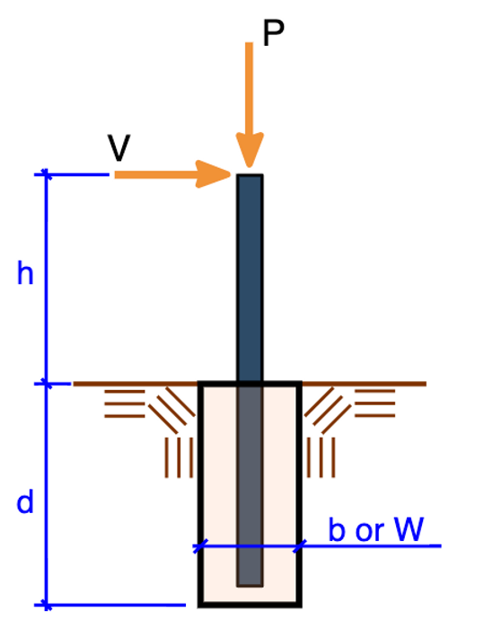

Example 2 - Flagpole Foundation#
0.2 | Project description#
Design of embedded pole foundation for the flagpole design example in Appendix A of NAAMM/FP 1001-07, “Guide Specifications for Design of Metal Flagpoles” Embedded pole foundation design is per 2024 IBC Eq 6-1 and Table 18-I-A. Soil properites are per Table 1806.2 in the 2024 IBC.
0.2 - 2 | Design input#
{kind=link}

Fig. 1 - Calculation Diagram#
Table 1: Design input
variable |
value |
[value] |
description |
|---|---|---|---|
Mbase |
24.84 ft-kip |
33.67 mkN |
moment at base of flagpole |
P |
24.84 kips |
110.47 kN |
horizontal load |
b |
24.00 inch |
60.96 cm |
width of concrete drilled pier |
PFP |
200.00 pcf |
31.42 kN_m3 |
allowable lateral bearing pressure - sandy gravel |
h |
1.50 ft |
0.46 m |
height |
d |
10.00 ft |
3.05 m |
initial guess for embedment depth |
Table 2: Iterative functions (rvsrc/scripts/pole_embed.py)
Function |
Docstring |
|---|---|
Depth_nonconstrained(d, P, h, dia, PFP, tol) |
Calculate required pole embedment using Eq. 18-1 |
Depth_constrained(d, P, h, dia, PFP) |
Calculate required pole embedment using Eq. 18-2 |
0.2 - 3 | Design Results#
Eq. 1: Required embed - nonconstrained
depth₁ = Depth_nonconstrained(d, P, h, b, PFP, 2)
depth₁ = 15.52 ft [depth₁] = 4.73 m | Required embed - nonconstrained
P h d PFP b
——————————————— ——————— ————————————————— —————————————————— —————————————————
24.84 kips 1.50 ft 10.00 ft 200.00 pcf 24.00 inch
————— ————— ————— ————— —————
horizontal load height initial guess for allowable lateral width of concrete
- - embedment depth bearing pressure - drilled pier
- - - sandy gravel -
——————————————— ——————— ————————————————— —————————————————— —————————————————
Eq. 2: Required embed - constrained
depth₂ = Depth_constrained(d, P, h, b, PFP)
depth₂ = 7.34 ft [depth₂] = 2.24 m | Required embed - constrained
P h d PFP b
——————————————— ——————— ————————————————— —————————————————— —————————————————
24.84 kips 1.50 ft 10.00 ft 200.00 pcf 24.00 inch
————— ————— ————— ————— —————
horizontal load height initial guess for allowable lateral width of concrete
- - embedment depth bearing pressure - drilled pier
- - - sandy gravel -
——————————————— ——————— ————————————————— —————————————————— —————————————————